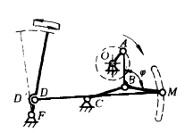
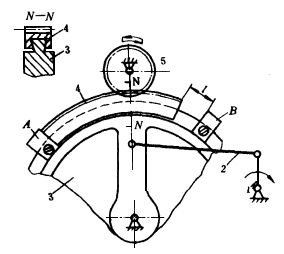
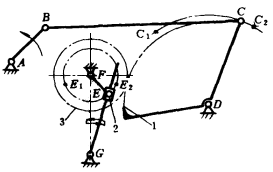

机构示意图
机构特性简介
两极限位置停歇摆动机构

主动曲柄AO通过四杆机构OABC的连杆AB上的M 点通过杆MD带动从动件DF作往复摆动，但因为M 点的轨迹有两段曲率近似相同的圆弧，而DM长度恰好等于两圆弧的曲率半径，且D和D'分别位于曲率中心，从而使摆杆从动件DF作两极限位置有停歇的间歇摆动。
两极限位置停歇摆动机构之二

图示机构中，主动曲柄1通过连杆2带动扇形板3摆动，在扇形板3上装有可移动的齿圈4。当1带动扇形 板3顺时针转动时，扇形板3上的挡块A推动齿圈4 与齿轮5啮合，使齿轮5逆时针转动。当扇形板3逆时针回摆时，齿圈4在扇形板3上滑动，这时齿圈4与齿轮5相对静止，齿轮5停歇不动，直至扇形板3上的挡块B推动齿圈，齿轮5方作顺时针转动。扇形板3再次变向摆动时，齿轮5同样也有一段停歇时间。因此该机构具有双侧停歇特点。如果改变挡块B与齿圈的间距l的弧长，可调整齿轮5的停歇时间。
瞬时停歇摆动机构

主动曲柄AB逆时针转动，带动摇杆CD和固联在CD上的扇形齿轮1，轮1与齿轮3啮合使铰接在轮3上的滑块2摆动，由滑块2驱使从动导杆EG作往复摆动，且在两摆动极限位置时有瞬时停顿。摇杆CD在摆动的两极限位置C1D、C 2 D时，角速度较小，且改变方向。摆动导杆机构FEG的从动导杆EG在两极限位置E 1 G、E 2 G附近时其角速度也较小，且改变方向。当用轮1、3将它们联系起来，并使之同时到达极限位置，结果使导杆在两极限位置附近实现近似停歇，且可停歇较长的时间。